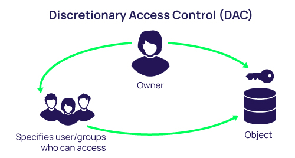
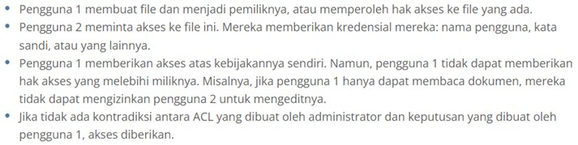
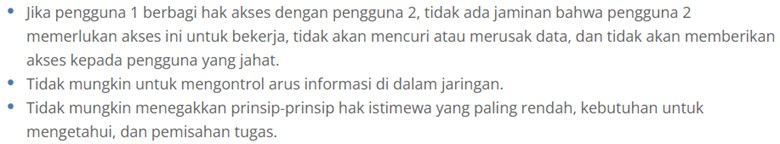
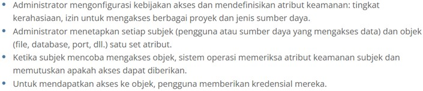
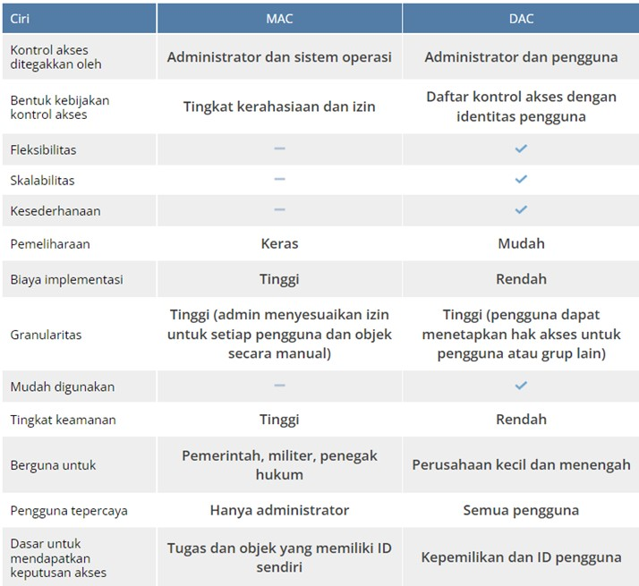
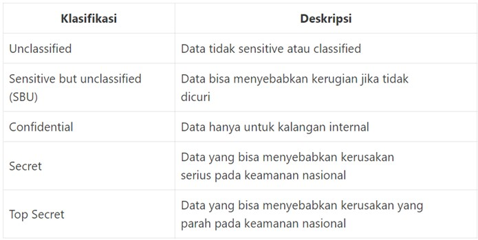
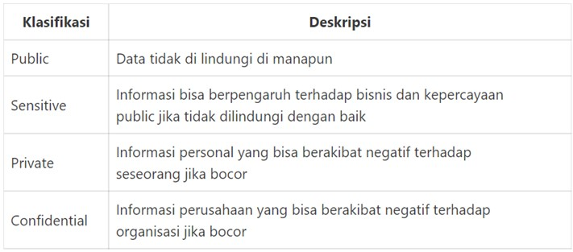

Perbedaan antara Fundamental,
Mandatory dan Discretionary Access Control
Pengertian Access Control
Kontrol akses adalah fitur keamanan yang mengontrol bagaimana pengguna dan sistem berkomunikasi dan berinteraksi dengan sistem dan sumber daya lain.
Akses adalah aliran informasi antara subjek dan sumber daya.
Subjek adalah entitas aktif yang meminta akses ke sumber daya atau data di dalam sumber daya. Misalnya: pengguna, program, proses, dll.
Resource adalah entitas yang berisi informasi . Contoh : Komputer, Database, File, Program, Printer dll.
Kontrol akses memberi organisasi kemampuan untuk mengontrol, membatasi, memantau, dan melindungi ketersediaan, integritas, dan kerahasiaan sumber daya
Access Control Fundamentals
Dalam keamanan informasi, kontrol akses sangat penting untuk memastikan kerahasiaan, integritas, dan ketersediaan. Mengontrol siapa yang memiliki akses ke sistem dan luasnya akses yang dimiliki pengguna sangat penting untuk memastikan keamanan sistem dan data pada sistem.
Saya mendefinisikan konsep dasar kontrol akses: sistem perlindungan yang mendefinisikan spesifikasi kontrol akses dan monitor referensi yang merupakan mekanisme penegakan akses sistem yang memberlakukan spesifikasi ini.
Access Control berdasarkan modelnya yaitu:
1.Discrectionary Access Control
Discretionary Access Constrol (DAC) merupakan suatu mekanisme data security yang menitik beratkan pada security objects, security subjects, dan access previleges dalam hal ini, DAC akan membatasi akses pada objek-objek berdasarkan identitas subjek atau group dimana mereka berada.
Dengan kata lain Discretionary Access Control (DAC) adalah model akses sumber daya berdasarkan identitas pengguna. Seorang pengguna akan diberikan hak akses ke sumber daya dengan ditempatkan pada sebuah ACL Access Control List yang berhubungan dengan sumber daya tersebut.

Dalam DAC, keamanan data dapat direpresentasikan bahwa:
1. User dapat menjaga data yang mereka miliki
2. Owner dapat memberikan grant pada user lain
3. Owner dapat memberikan definisi tipe akses yang akan diberikan pada user apakah akses tersebut berupa read, write, execute.
Mendapatkan akses ke file dalam model DAC berfungsi seperti ini: 
Kapan menggunakan DAC
DAC tidak boleh digunakan oleh organisasi yang bekerja dengan data yang sangat sensitif (medis, keuangan, militer, dll.) karena beberapa alasan:

Pada saat yang sama, DAC adalah pilihan yang baik untuk usaha kecil dengan staf TI dan anggaran keamanan siber yang terbatas. Hal ini memungkinkan untuk berbagi informasi dan memastikan kelancaran operasi bisnis.
2.Mandatory Access Control
Mandatory Access Control (MAC) adalah metode membatasi akses ke sumber daya berdasarkan sensitivitas informasi yang berisi sumber daya dan otorisasi pengguna untuk mengakses informasi dengan tingkat sensitivitas tersebut.
Anda menentukan sensitivitas sumber daya melalui label keamanan. Label keamanan terdiri dari tingkat keamanan dan nol atau lebih kategori keamanan. Tingkat keamanan menunjukkan tingkat atau klasifikasi hierarkis informasi
Kategori keamanan mendefinisikan kategori atau grup tempat informasi tersebut berada (seperti Proyek A atau Proyek B). Pengguna hanya dapat mengakses informasi dalam sumber daya yang diberi label keamanan mereka. Jika label keamanan pengguna tidak memiliki otoritas yang cukup, pengguna tidak dapat mengakses informasi di sumber daya.
Dengan MAC, proses mendapatkan akses terlihat seperti ini: 
Prinsip Dasar MAC
1. Privasi dan kerahasiaan sumber daya organisasi adalah yang terpenting. Tidak ada yang memiliki hak default untuk mengakses atau mengedit data seseorang.
2. Penyediaan akses dikelola secara terpusat.
3. Setiap individu dan sumber daya dalam sistem memiliki label keamanan dengan klasifikasi dan kategorinya.
Kapan menggunakan MAC
Model kontrol akses ini banyak digunakan oleh organisasi pemerintah, militer, dan lembaga penegak hukum. MAC digunakan oleh pemrintah AS untuk mengamankan informasi rahasia dan untuk mendukung kebijakan dan aplikasi keamnan bertingkat. Untuk perlindungan dan kepatuhan data yang lebih baik di industry asuransi dan bidang perbankan, organisasi menggunakan MAC untuk mengontrol akses ke data akun pelanggan. Model kontrol akses non-discretionary ini juga dapat melindungi akses ke database, di mana prosedur, tabel, tampilan, dan elemen lainnya akan menjadi objek.
Perbandingan MAC vs DAC
Kesimpulan :
Membandingkan MAC dan DAC , Saya melihat bahwa mereka adalah dua model kontrol akses yang berlawanan. MAC dikendalikan oleh administrator dan membutuhkan banyak waktu dan upaya untuk memeliharanya, tetapi menyediakan tingkat keamanan yang tinggi. DAC jauh lebih mudah untuk diterapkan dan dipelihara, karena pengguna dapat mengelola akses ke data yang mereka miliki. Namun, DAC tidak cukup baik untuk melindungi catatan sensitif.
Implementasi ke MySQL
Implementasi access control di mysql dikenal dengan Data Control Language (DCL).
Ialah perintah MySQL yang digunakan untuk melakukan pengontrolan akses ke data dan server database.
Berikut ini adalah beberapa perintah DCL :
- Grant
- Revoke
Perintah Grant digunakan untuk memberikan hak akses khusus kepada user untuk melakukan aksi tertentu pada object tertentu di database.
Perintah Revoke digunakan untuk menarik kembali / mencabut / membatalkan hak akses khusus yang sebelumnya telah diberikan melalui perintah Grant.
1.Fundamental Access Control
Dengan mengimplementasikan system access control terhadap user dengan pemberian hak akses terhadap user tersebut. Anda telah melakukan implementasikan fundamental access control. Karena telah memastikan CIA telah berjalan.
Implementasi :
2. Mandatory Access Control (MAC)
Pada implememtasi MAC pada mysql, administrator dapat memberikan semua izin berdasarkan level dari object tersebut. Namun tidak dapat memberikan hak GRANT OPTION . Karena hanya administrator yang dapat memberikan izin kepada tiap user.
Klasifiksai dari Mandatory Access Control berdasarkan military data classification ; 
Sedangkan yang bersifat komersial, bisa dilihat dalam table berikut ; 
Implementasi :
3. Discretionary Access Control (DAC)
Implementasi DAC pada mysql, user dapat diberi hak GRANT OPTION hal tersebut dilakukan untuk fleksibilitas.
Implementasi :
Referensi :
(https://www.ekransystem.com/en/blog/mac-vs-dac)
(https://flinsetyadi.com/kontrol-akses-dalam-keamanan-komputer/)
(https://www.ibm.com/docs/en/zos/2.3.0?topic=environment-mandatory-access-control-mac)